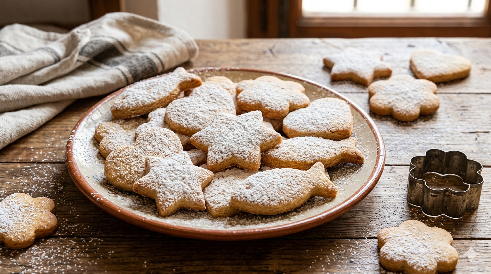

Crespells
Home

Description:
Crespells are traditional Mallorcan shortbread biscuits,
cut into fun shapes such as stars, flowers, and crosses.
Like Rubiols and Panades, they are closely associated with Easter celebrations in Mallorca,
though they are enjoyed year round. Simple yet delicious, they have a crumbly texture and
a subtle citrus flavour that makes them impossible to resist.
Ingredients:
- 500g plain flour
- 200 g sugar
- 150g lard (or butter)
- 2 eggs
- Zest of one lemon
- Zest of one orange
- 1 teaspoon baking powder
- A pinch of salt
- Icing sugar for dusting
Steps
- Mix the flour, sugar, baking powder and salt in a large bowl.
- Add the lard and rub it into the flour until it resembles breadcrumbs.
- Add the eggs, lemon zest and orange zest and mix until you have a smooth, firm dough.
- Wrap the dough and let it rest in the fridge for 30 minutes.
- Preheat the oven to 180°C.
- Cut into shapes using cookie cutters — stars, flowers and crosses are traditional.
- Roll the dough out to about 1cm thick on a floured surface.
- Place on a baking tray lined with baking paper.
- Bake for 12 to 15 minutes until lightly golden on the edges.
- Dust with icing sugar once cooled and serve.